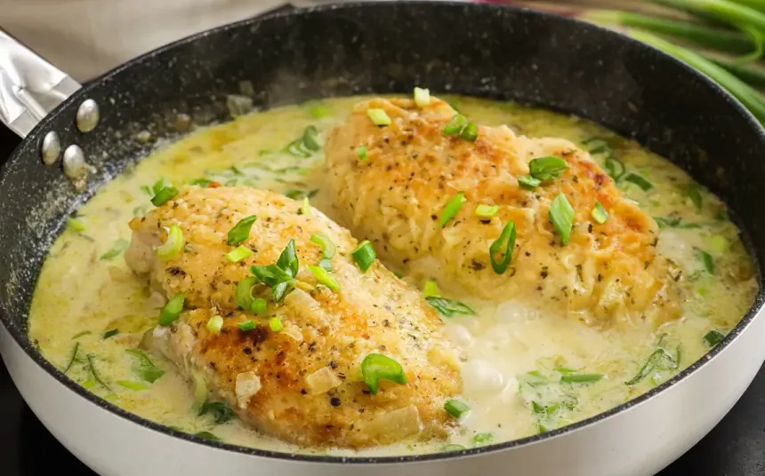
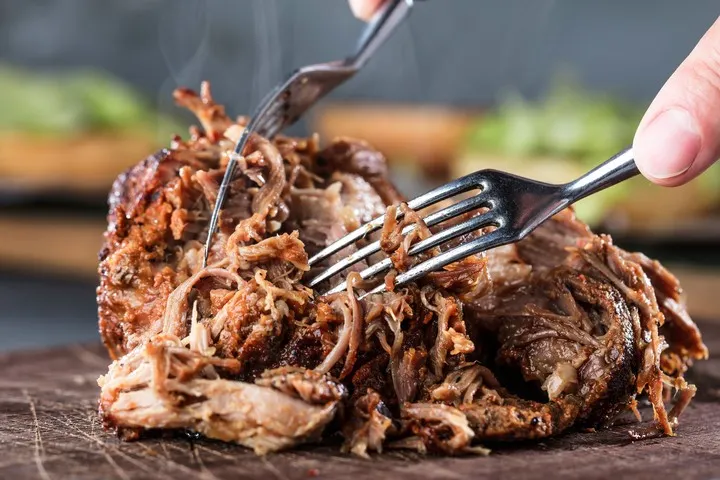

Pollo al Verdeo

Ingredientes (para 2-4 personas):
- 2-4 pechugas o presas de pollo.
- 2-5 cebollas de verdeo (picadas en rodajas).
- 1 diente de ajo picado.
- 200 ml de crema de leche.
- 1 vaso de vino blanco (opcional, para desglasar).
- 1 vaso de caldo de pollo o agua.
- Sal, pimienta y aceite de oliva o manteca.
- Opcionales: mostaza, panceta, champiñones o queso rallado.
- Dorar el pollo: Salpimenta el pollo y dóralo en una sartén con aceite o manteca por ambos lados.
Retíralo y resérvalo.
- Sofreír el verdeo: En la misma sartén, saltea la cebolla de verdeo y el ajo hasta que estén
tiernos.
- Preparar la salsa: Añade el vino blanco y deja evaporar el alcohol. Incorpora el caldo y la
crema de leche.
- Cocinar juntos: Devuelve el pollo a la sartén, tapa y cocina a fuego bajo por 15-20 minutos
hasta que el pollo esté cocido y la salsa espese.
- Servir: Decora con la parte verde de la cebolla y acompaña con puré de papas, arroz o papas
fritas.
Bondiola Braseada

Ingredientes (para 2-4 personas):
- 1 bondiola de cerdo (1 a 1,5 kg).
- Vegetales: 1 cebolla grande, 1 zanahoria, 1 diente de ajo (o una cabeza de ajo partida a lo
largo).
- Líquido: 1 litro de cerveza negra, caldo de carne o agua.
- Condimentos: Sal, pimienta, hojas de laurel, romero o tomillo fresco.
- Opcional (glaseado): 2 cucharadas de mostaza y 2 de miel.
- Preparar y sellar: Secar bien la bondiola con papel toalla. Salpimentar generosamente. En una
olla gruesa o fuente alta, calentar aceite a fuego medio-alto y dorar la carne por todos sus
lados hasta que esté bien caramelizada. Retirar y reservar.
- Preparar el fondo: En la misma olla, sofreír la cebolla cortada en cuartos o gajos, la zanahoria
y el ajo hasta que estén ligeramente dorados. Agregar las hierbas (laurel, romero) y desglasar
con un poco del líquido de cocción, raspando los sabores del fondo.
- Brasear: Colocar la bondiola de vuelta en la olla, encima de los vegetales. Agregar el líquido
(cerveza o caldo) hasta cubrir la carne aproximadamente a la mitad. Rectificar la sal.
- Cocción lenta: Tapar herméticamente la olla con una tapa resistente al horno o con papel
aluminio. Llevar al horno precalentado a 160°C - 180°C. Cocinar por 2 a 3 horas, dependiendo del
tamaño de la pieza.
- Verificar y servir: La bondiola está lista cuando se deshace fácilmente con un tenedor. Retirar
del horno, dejar reposar tapada por 10 minutos, desmechar con dos tenedores y servir con el jugo
de cocción colado.